Introducción
En los últimos años se han venido desarrollando herramientas tecnológicas, las cuales han mejorado en gran medida la gestión de las diferentes áreas de las empresas. El crecimiento vertiginoso en el uso de las tecnologías de la información y comunicación (TIC), cada vez más cerca del alcance de todos, no solo de grandes empresas sino también de microempresas hacen más eficiente este proceso y generan mayor confiabilidad en los reportes de inspección.
La sistematización del manejo de la información es una tarea, que debe ser organizada y coordinada con el equipo de personal de la empresa, con el fin de lograr las metas propuestas, por lo tanto, es necesario reconocer la importancia de la tecnología en el manejo de la información y capacitar a todo el personal en el manejo de dichas herramientas.
1. Gestión de información de las inspecciones de calidad
La administración de la información relacionada con la calidad se debe manejar con alta seguridad, para evitar alteraciones o pérdida de información que puedan afectar los resultados, los cuales se tendrán en cuenta para la toma de decisiones, las cuales deben ser tomadas de manera acertada.
Para recolectar la información de las inspecciones como parte de la gestión de las actividades de organización de la información, se utilizan documentos de registro que se han creado previamente según el área, proceso o insumo a inspeccionar. Es primordial crear un protocolo para el manejo de la información donde se establezcan los parámetros para el cuidado de su seguridad.
En la información recolectada de las inspecciones de calidad, se deben definir los datos que se van a recoger; la forma, el momento y el lugar de recolectarlos, la forma de custodiarlos y a quienes están disponibles; posteriormente, se procede a realizar las clasificaciones necesarias.
Es importante, además, asignar la responsabilidad en la gestión de la información para contribuir a la estructura organizacional, para poder brindar los soportes pertinentes.
¿Por qué es necesario un protocolo para el manejo de la información?
Los protocolos son un conjunto de reglas que rigen el proceso, por lo cual da seguridad en la presentación de informes, optimiza la utilización de tiempo y permite entregar información especializada dando relevancia al área de calidad.
También es necesario estructurar la comunicación con todas las áreas y procesos de la empresa, realizando el seguimiento y consiguiendo las metas propuestas.
En el caso de los soportes de las inspecciones, los reportes deben estar diligenciados en formatos, dentro de los cuales es importante que se encuentre de manera clara y completa la información para realizar los análisis de la información.
1.1. Herramientas TIC para registro de información
En la recolección de la información y su registro en las bases de datos se han utilizado comúnmente las herramientas de office como Excel, o Access, en hojas de cálculo y con el protagonismo ganado por la internet, con la cual mejora la comunicación en las empresas. Se han ajustado a las necesidades en términos de lugar y en tiempo, además se han desarrollado varios programas para el manejo de la información.
Teniendo en cuenta lo anterior, las bases de datos creadas a partir de la información recolectada en los procesos de inspección se manejaban solo por cuadros o tablas, lo cual resultaba dispendioso en el manejo de una gran cantidad de datos. Por consiguiente, las tecnologías de la información son un soporte dinámico para la comunicación de información en la empresa.
Algunas tecnologías utilizadas para el manejo de bases de datos son:
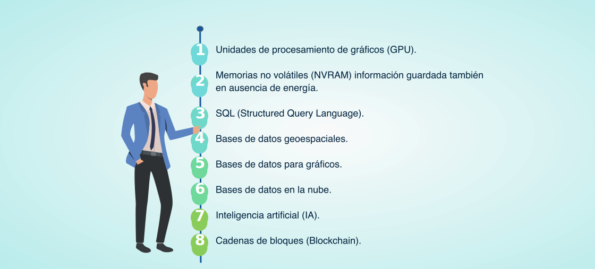En la recolección de información se pueden utilizar algunas aplicaciones como: Evernote, Ubernote, Searcheeze, Catch Notes, Justnotes, Nevernote, mediante las cuales se puede sincronizar la información en los diferentes dispositivos, sea un computador, una tablet o de un celular al correo electrónico, por ejemplo.
Debido al manejo de gran cantidad de datos, y por el riesgo a la pérdida de información por algún daño en los ordenadores de las empresas o memorias externas, actualmente se manejan tecnologías de la información y comunicación sencillas para el almacenamiento de la información en la nube como: Dropbox, Gsuite, One Drive, ICloud.
Las tecnologías de la información más avanzadas que se han ido introduciendo son aplicaciones de programación y robótica y realidad virtual. Las aplicaciones como escáneres para ubicación y cuantificación de defectos, y simuladores ayudan al procedimiento de inspección de calidad.
Existen programas especializados para el análisis y control de calidad entre los cuales se destacan:
Es una herramienta de análisis de datos que combina procedimientos analíticos con gráficos interactivos proporcionando un entorno integrado de análisis que puede ser aplicado en cada una de las fases de un proyecto, desde los protocolos de gestión Six Sigma hasta los procesos de control de calidad.
En la figura se observa un reporte de los gráficos que genera este programa para el análisis de la información.
Es un software flexible para el control de la calidad mediante la utilización de herramientas estadísticas, tanto en estadística básica, como avanzada; para el análisis de la capacidad de procesos y generación de gráficos como Pareto, histogramas, entre otros; puede introducir hojas de cálculo de Excel o ASCII y puede editar datos ya que se integra fácilmente con extensiones para código abierto.
Es un software que puede ser utilizado en varios sectores industriales, el cual aplica varias técnicas de calidad, para desarrollar gráficos como Pareto, análisis de la capacidad, diagrama de control e Ishikawa o causa- efecto.
Es otro software para el manejo de herramientas estadísticas en el control de calidad, donde al igual que los anteriores se pueden desarrollar las diferentes técnicas de calidad. Su uso es amigable pues es parecido al programa de Excel.
1.2. Sistema de información de calidad
En la aplicación del sistema de información de calidad se planea, recolecta, procesa, almacena, distribuye, recupera e incluye las actividades de administración de la información de calidad para los fines definidos por la dirección, en pro de la mejora de la calidad de la empresa.
Las características que debe cumplir de un sistema de información son:
Flexible
Seguro
Fácil de usar.
Nivel de automatización.
Uso de herramientas estadísticas.
Los componentes de un sistema de información son:
Entrada: ingreso de datos.
Proceso: uso de herramientas para realizar cálculos donde se puede relacionar, resumir, analizar y concluir la información recolectada.
Salida: presentación de los resultados obtenidos con la utilización de las herramientas.
Retroalimentación: donde se toman los resultados para presentar los informes y tomar acciones correctivas y de mejoramiento.
Las fases para el desarrollo de un sistema de información son continuas por lo cual se pueden observar en la siguiente imagen como un ciclo:
Identificar las necesidades de información.
Diseñar el sistema de información.
Desarrollo de documentación y uso de programas informáticos.
Realizar pruebas.
Implementar el sistema.
Realizar mantenimiento para evitar fallas o corregirlas.

El sistema de información de calidad integra a las personas del departamento de calidad, los procedimientos y la tecnología; las cuales, al interactuar, comprenden la información contenida en los archivos y formatos, sean físicos o digitales; en el caso de información en físico se dispone de un espacio, un lugar por carpetas rotuladas. En el caso de la información manejada en digital, se dispone de un lugar en los computadores o en la nube, la cual debe estar organizada por carpetas debidamente rotuladas y con los permisos especificados para su disposición.
La información que constituye un sistema de información de calidad no constituye solamente las inspecciones, además comprende:
Área de servicio al cliente y ventas: devoluciones, reclamos, datos de los clientes, información de ventas.
Área de diseño: seguimientos y evaluaciones de muestras y lote piloto.
Área de compras: información de proveedores, pruebas de laboratorios a textiles, insumos, inspecciones a insumos y textiles.
Inspecciones de producto en proceso.
Inspecciones de producto terminado.
Información de auditorías.
En la planeación del sistema de información de calidad se utilizan programas de computador, se debe analizar que sea flexible en el ingreso de nuevos datos, para que puedan ser rápidamente procesados, porque el ingreso debe ser continuo, en tiempo real y de fácil acceso.
1.2.1. Reporte de fallas y errores.
El informe sobre una falla o error debe tener unas características para su presentación, las cuales cumplan con el objeto de informar y así establecer las acciones que se incluyan en el plan de calidad, conforme con el manual de calidad. En los procesos que se llevan a cabo en la fábrica es posible reconocer:
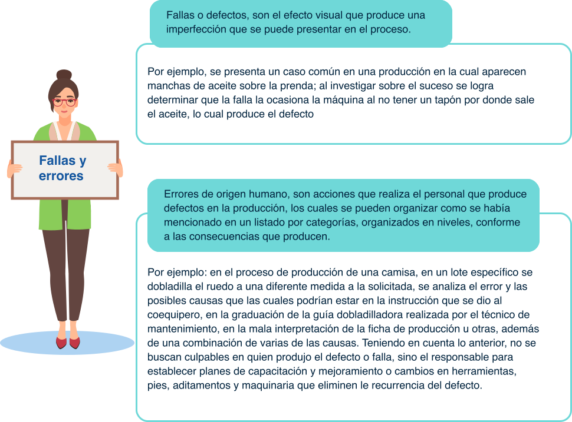El seguimiento de estos reportes hace parte del sistema de información de calidad de la empresa, los cuales deben ser monitoreados y valorados por el equipo de calidad con el fin de incluir en los planes de calidad las acciones de mejora.
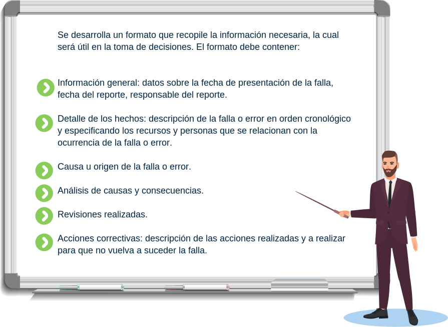A continuación, se puede ver un ejemplo del formato de reporte:
1.2.2. Recopilar datos de inspecciones.
Una vez establecido el procedimiento de las inspecciones, con sus recursos y variables a medir claras, y los atributos de las prendas definidos, se recopila la información de las inspecciones. Los inspectores realizan su actividad utilizando los formatos, los cuales se organizan según el tipo de inspección, y mediante hojas de cálculo se van trascribiendo los datos. Con el uso del sistema de información van realizando cálculos, clasificaciones y demás operaciones con el fin de tener disponible la información en tiempo real.
Durante un día en una planta de confección puede surgir una gran cantidad de información de los diferentes tipos de inspecciones como son las inspecciones de insumos, productos en proceso, productos terminados con la rapidez y certeza necesaria. Teniendo en cuenta lo anterior los pasos para recopilar los datos de las inspecciones son los siguientes:
El manejo de la documentación de calidad dentro de un sistema de gestión debe obedecer a dicho procedimiento, con el fin de apoyar al sistema de gestión y aportar las evidencias requeridas para mantener una óptima comunicación y el control del sistema de gestión de calidad. Así mismo, se debe tener en cuenta la gestión documental obedeciendo a las tablas de retención documental con la intención de no ir en contravía de los tiempos estipulados de retención y la clasificación según la numeración especificada.
Es importante mencionar métodos para recopilar información que se puedan utilizar en las inspecciones, los cuales al combinarlos complementan la información, comprendiendo todo lo relacionado con la inspección sobre todo la información relevante, los cuales son los siguientes:
Registros
Cuestionarios
Entrevistas individuales o en grupo.
Observaciones directas.
Informes
Algunos instrumentos para respaldar la recolección de la información son las cámaras de video, hoy en día los celulares tienen buena resolución y se pueden realizar fotos y videos.
Otro aspecto para examinar relacionado con la recolección de la información de las inspecciones, son los costos derivados de la actividad, los cuales hacen parte de los costos de calidad de la empresa para tener en cuenta y controlar.
1.2.3. Compartir información.
Con la globalización, se requiere compartir la información con el fin de generar cambios acordados previamente a través de metodologías de trabajo grupal, garantizando las mejoras necesarias en los productos y en los procesos.
La información organizada y clasificada para su análisis se puede compartir a las áreas de la empresa según su competencia, por lo cual se debe tener cuidado con qué información se comparte y a quien.
Antes de compartir la información se debe revisar que cumpla con las siguientes características:
Existe información que se comparte de manera automática debido al uso de herramientas tecnológicas, por tanto, se debe limitar el uso compartido de archivos y documentos, los cuales pueden estar tanto en forma física como digital, para evitar problemas que desencadenen daños mayores en la calidad, afectando el logro de metas y objetivos de la empresa en pro de su competitividad.
1.2.4. Disponibilidad para consultas.
Conforme al procedimiento de gestión documental, la información debe estar disponible para los interesados con el fin de brindar trasparencia en los procesos. La información debe estar abierta, tanto en el momento en que se realicen auditorías de tipo externo como al personal de supervisión y control que requieran revisar de manera directa los resultados de las inspecciones, para apoyar el proceso de toma de decisiones.
Teniendo en cuenda lo anterior pueden consultar conforme a los siguientes requisitos:
- El personal que va a consultar tenga los permisos necesarios, y relación con el proceso.
- La información para consultar debe estar previamente recopilada.
- Registrar la consulta de la información para tener seguimiento de su uso.
1.2.5. Seguimiento y monitoreo de información.
Una vez se realizan las inspecciones y se determinan las acciones a realizar, se procede a su seguimiento documentando el avance de estas conforme al plan de calidad, con el fin de realizar los ajustes pertinentes en el momento requerido. Los resultados de los indicadores muestran el comportamiento de alguno de los aspectos relacionados con la calidad, por lo tanto, apoya el seguimiento de la información.
El monitoreo es un proceso continuo y sistemático que va midiendo el progreso de los resultados propuestos. Se debe establecer un periodo de tiempo y realizar la comparación de los resultados con los indicadores planeados; es estático y garantiza el resultado de las acciones correctivas y demás actividades relacionadas, dentro de las cuales se van observando y recolectando cada vez más información. El monitoreo es una herramienta práctica en la recolección de datos.
Por su parte el seguimiento se refiere a un conjunto de actividades con el propósito de comprobar que se cumplan las metas trazadas, y va relacionando otros procesos para obtener los logros propuestos. El seguimiento va sistematizando los resultados del monitoreo, los recursos utilizados, cumplimiento de metas, por lo tanto, evalúa el logro de los objetivos.
Algunos propósitos del seguimiento son:
Fomentar la gestión del desempeño.
Articular la planeación y la evaluación.
Motivar la capacitación con los resultados de las evaluaciones de indicadores y demás resultados relacionados con la calidad.
Dar la importancia a las evidencias recolectadas.
El seguimiento es la base para la evaluación de calidad, por eso se deben tener en cuenta algunas claves:
Definir los indicadores de gestión adecuados.
Programar los seguimientos necesarios.
Compartir la información con el equipo de calidad y las demás personas involucradas en la gestión de la empresa.
Definir los recursos necesarios para las actividades de seguimiento.
Establecer plazos de entrega de informes de seguimiento.
La evaluación es el análisis crítico de los resultados de las inspecciones, seguimientos, y demás actividades relacionadas con el fin de comparar el logro de objetivos planteados.
La evaluación está relacionada al monitoreo y seguimiento, se debe tener en cuenta que se realiza de forma periódica, la cual puede ser anual o conforme a los periodos de las colecciones de las prendas. Es el insumo para la planeación de la producción anual y contribuye a la realización de nuevas estrategias
Para evaluar la capacidad de un proceso se recurre a las herramientas de calidad, como histogramas, gráficos de control o planillas de inspección.
Para medir algún cambio o implementación se efectúa un estudio de índices de capacidad. Para ello se establecen las fases del proceso, desde el diseño de la prenda hasta los límites de especificación, los cuales son establecidos por una norma, la empresa y el cliente.
Los límites constituyen requisitos, es por eso por lo que se deben tener especificados los valores de los límites superior e inferior de un proceso, así como el valor esperado que es el valor nominal. Para analizar un proceso se realizan las mediciones necesarias para calcular la media de estos y la variación de los datos con la desviación estándar, con el fin de calcular que la variable se encuentre en los límites definidos, por tanto, se estima la capacidad del proceso.
Una vez se realicen los gráficos de control, se analizan las causas de desviación y los puntos que estén fuera de control; se sigue monitoreando el proceso con los índices de capacidad, los cuales se clasifican según el siguiente cuadro:
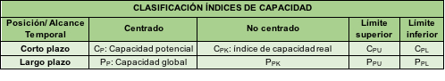Fuente: Salazar. (2019).
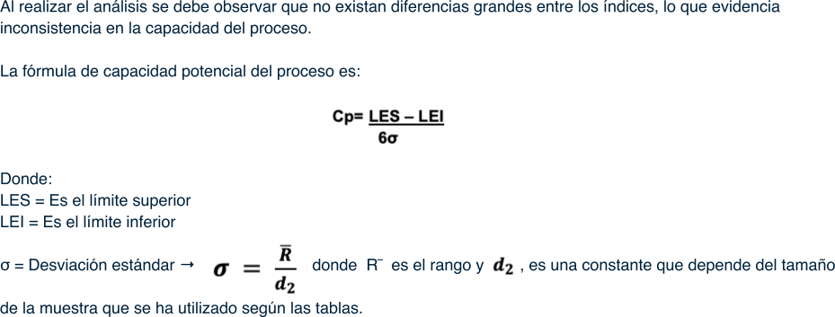Para entender los índices se debe observar la curva que representa la probabilidad del comportamiento del proceso, en donde se comparan la variación del proceso y la tolerancia dada por los límites, el siguiente gráfico muestra la comparación de los conceptos de dispersión y tolerancias.
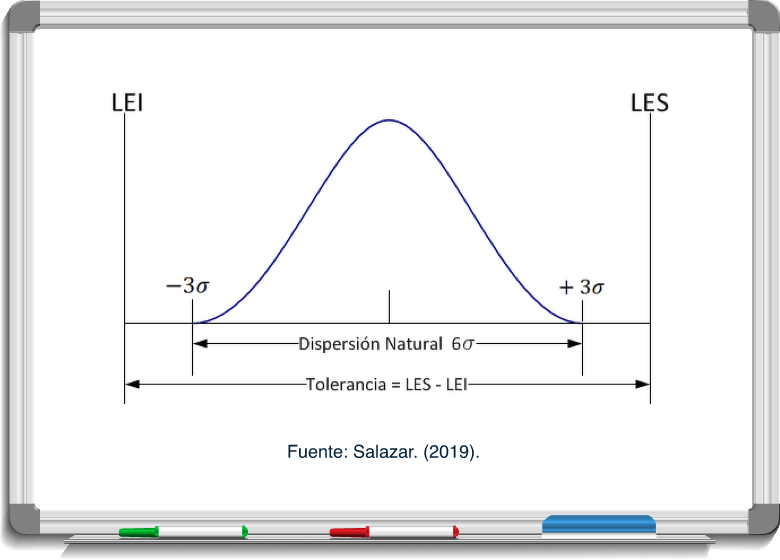Al calcular los resultados se analiza que, si Cp es mayor a 1, quiere decir que el proceso potencialmente cumple con las especificaciones; pero si el Cp es menor a 1, quiere decir que el proceso potencialmente no cumple con las especificaciones, es decir que el producto es no conforme. Teniendo en cuenta lo anterior al realizar los monitoreos, el seguimiento y posteriormente la evaluación con los parámetros se determinan las acciones a realizar.
El siguiente cuadro muestra los análisis para tener en cuenta según la herramienta Seis sigma, una vez se tenga los resultados de la Cp:
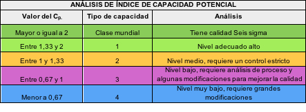Plantear estrategias para mejorar el proceso.
Cambiar el proceso.
Rediseñar la prenda.
Permitir aceptar el proceso.
No hacer el proceso o el producto.
Inspeccionar al 100% la prenda.
Cambiar la especificación y así cambiar también los límites de aceptación de la prenda.
Para analizar el proceso, incluyendo la media del proceso se calcula el CPK es decir el índice de capacidad real, el cual es el valor menor entre CPU y CPL, a continuación, se muestra las dos fórmulas:
Se puede hablar de dos cualidades del proceso con exactitud y precisión, se habla de un proceso exacto cuando CP y CPK son iguales. Se habla de un proceso preciso cuando el CP es mayor a 2.
Al realizar los análisis se debe llegar a las causas que ocasionan que un proceso no cumpla con las especificaciones, a continuación, se presentan los tipos de causas:
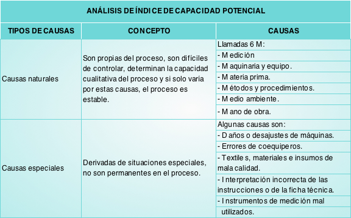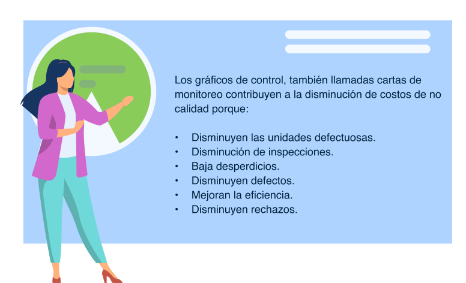De acuerdo con Barbosa (2016) “las cartas de monitoreo se clasifican por variable y por atributo. Las cartas de control por variable son utilizadas cuando la característica de calidad que se quiere medir es de tipo continuo, mientras que las cartas de control por atributo se utilizan cuando la característica de calidad que se quiere medir es de tipo discreto y solo puede tomar dos valores: conforme o no conforme”. (p.30). Las cartas de monitoreo para atributos se aplican cuando la característica de calidad del proceso no es medible y el producto es considerado como conforme o no conforme, dependiendo del número de no conformidades que tiene” (p.33)
Teniendo en cuenta los atributos se pueden desarrollar cartas y gráficos de control para:
- Fracción de unidades no conformes (Carta p)
“La carta p se utiliza cuando la característica de calidad se presenta por la fracción no conforme de la muestra.
Teniendo en cuenta que la fracción no conforme es igual al numero de artículos no conformes de la muestra respecto al número total de artículos de la muestra, y se representa:
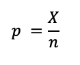Si el artículo no se ajusta al estándar en una o más de las características del estándar, se clasifica como no conforme. Los principios estadísticos fundamentales a la carta p están basados en la distribución binomial. Suponga una probabilidad de no conformidad p y que las unidades sucesivas son independientes.
Si se selecciona una muestra aleatoria de n unidades del proceso, y X es el número de unidades del producto que son no conformes, entonces X tiene una distribución binomial con parámetros n y p.

Luego de realizar los cálculos se realiza la grafica y se procede a realizar el análisis, monitoreos y seguimientos y se evalúan los resultados.
Fuente: Barbosa (2016. P. 34)
- Número de unidades no conformes (carta np)
“La carta np está diseñada para monitorear el número de unidades no conformes en lugar de la proporción de no conformidad. Los límites calculados son calculados mediante las siguientes fórmulas” Barbosa (2016. P.34)
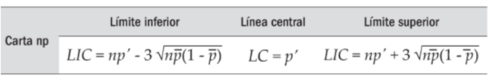Fuente: Barbosa (2016. P. 34)
Luego de realizar los cálculos se realiza la gráfica y se procede a realizar el análisis, monitoreos y seguimientos y se evalúan los resultados.
- Número de no conformidades por unidad (Carta c)
Continuando con lo expresado por Barbosa (2016) “en la carta c se analiza el número total de no conformidades en una unidad. Se utiliza para determinar la ocurrencia de no conformidades en la inspección de una unidad de producto, es decir, determinar cuántas n
o conformidades tienen un producto. Esta carta se usa en los casos donde el tamaño del subgrupo es una unidad inspeccionada formada por un elemento o grupo de elementos que conforman la unidad estadística. Esta carta de monitoreo se construye según las siguientes expresiones” (p. 35)
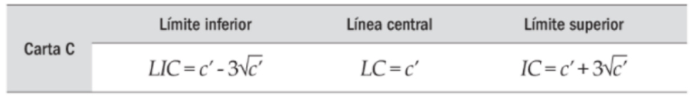La línea central se calcula según fórmula
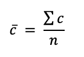Donde c ̅ es el número promedio de no conformidades por unidad en una muestra de tamaño n dada. Barbosa (2016. p.36)
Dentro del plan de calidad deben estar especificadas las técnicas de monitoreo, el seguimiento a realizar y las evaluaciones a través de todo el proceso de producción de la prenda, todo con el fin de asegurar la calidad, dentro de procedimientos para estandarizar el manejo de éstas tres actividades relacionadas a la calidad.
Los monitoreos y el seguimiento deben estar registrados para establecer las comparaciones y reconocer el avance de calidad de los procesos contenidos en informes de calidad.
Glosario
Atributo: cualquier característica de calidad que pueda ser clasificada de forma cumple o no cumple, funciona o no funciona, pasa o no pasa, a efectos de control del proceso será considerado como un atributo. Barbosa (2016, p. 33).
Blockchain:información organizada en bloques y entrelazadas en forma de cadenas, encriptada con el fin que nunca se pierda asegurando su seguridad.
Capacidad de un proceso:es la aptitud de producir una prenda que cumpla con los requisitos determinados en los límites.
Material complementario
| Autor, (año del documento o material), Nombre del documento o material. | Tipo de material ( Video, capítulo de libro, articulo, otro) | Enlace del Recurso o Archivo del documento o material |
|---|---|---|
| Gutiérrez Hernández, S. (2020). Caso 1 fracción de unidades no conformes (carta p) | Archivo (Word y Excel) | decargar |
| Gutiérrez Hernández, S. (2020). Caso 2 numero de unidades no conformes (carta np) | Archivo (Word y Excel) | decargar |
| Gutiérrez Hernández, S. (2020). Caso 3 numero de no conformidades por unidad (carta c) | Archivo (Word y Excel) | decargar |
| Minitab Brochure. | Folleto | Ver |
Referencias bibliográficas
Barbosa Correa, R. (2016). Monitoreo y análisis estadístico de proceso con aplicaciones. Universidad del Norte.https://elibro-net.bdigital.sena.edu.co/es/lc/senavirtual/titulos/69992
Salazar, B. (2019). Capacidad de procesoshttps://www.ingenieriaindustrialonline.com/gestion-de-calidad/capacidad-de-procesos/#:~:text=La%20medida%20de%20la%20capacidad,capacidad%20del%20proceso%20(Cp).&text= El%20Cp%20compara%20el%20ancho,(dispersi%C3%B3n%20natural)%20del%20proceso
Cortés, M. (2017). Ocho tecnologías que están transformando las bases de datos. REVISTA CIO MÉXICO.
Estadísticas de SPSS. Estadísticas de IBM SPSS. (2020). Consultado el 27 de octubre de 2020, enhttps://www.ibm.com/account/reg/co-es/signup?formid=urx-42941
Oficina de Evaluación del PNUD. (2009). Manual de seguimiento y evaluación de resultados. B - PNUD.https://elibro-net.bdigital.sena.edu.co/es/lc/senavirtual/titulos/3507
Pérez Marqués, M. (2016). Control de Calidad Técnicas y herramientas (1ª ed.). Editor Alfaomega Grupo
SAS. SAS: Analítica, inteligencia artificial y gestión de datos. (2020). Consultado el 27 de octubre de 2020 enhttps://www.sas.com/es_co/home.html
STATGRAPHICS.NET. STATGRAPHICS Centurion 18. (2020). Consultado el 27 de octubre de 2020 enhttps://statgraphics.net/